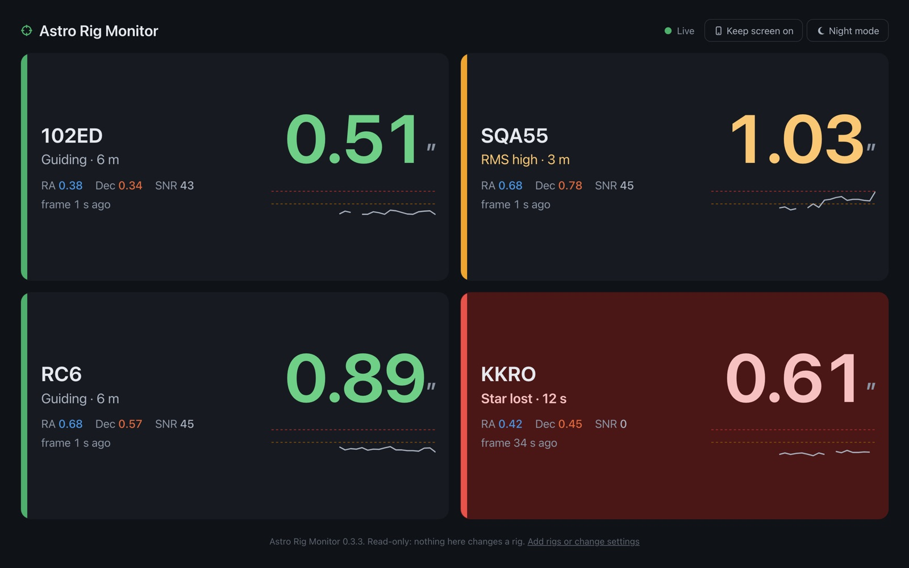

ARMAstro Rig Monitor
During the night · Mac, Windows, Raspberry Pi
Every rig's guiding on one screen, on your phone, tablet or computer, and an alert only when something goes wrong: RMS creeping up, star lost, guiding stopped. Read-only, so it can't disturb a running plan.